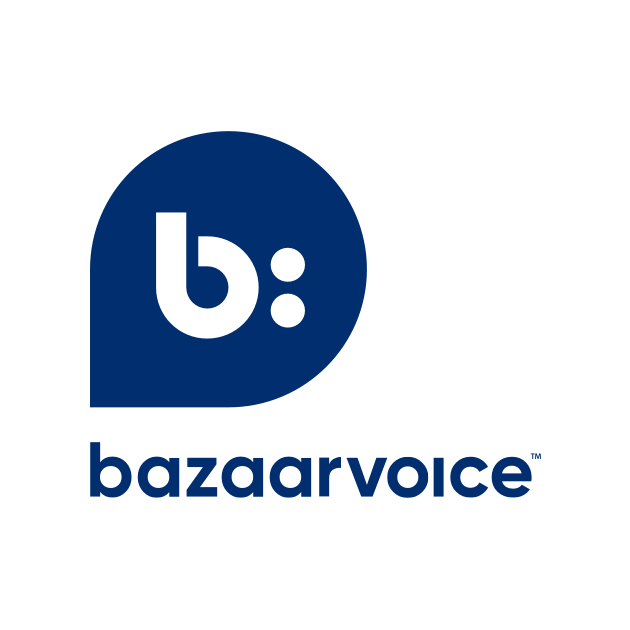
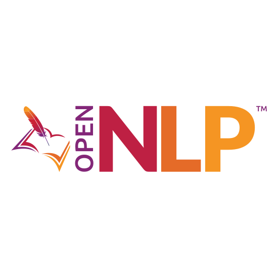

Organizations and products using ONNX Runtime
“With ONNX Runtime, Adobe Target got flexibility and standardization in one package: flexibility for our customers to train ML models in the frameworks of their choice, and standardization to robustly deploy those models at scale for fast inference, to deliver true, real-time personalized experiences.”
–Georgiana Copil, Senior Computer Scientist, Adobe
“The ONNX Runtime integration with AMD’s ROCm open software ecosystem helps our customers leverage the power of AMD Instinct GPUs to accelerate and scale their large machine learning models with flexibility across multiple frameworks.”
–Andrew Dieckmann, Corporate Vice President and General Manager, AMD Data Center GPU & Accelerated Processing
“Using ONNX Runtime, we have improved the inference performance of many computer vision (CV) and natural language processing (NLP) models trained by multiple deep learning frameworks. These are part of the Alipay production system. We plan to use ONNX Runtime as the high-performance inference backend for more deep learning models in broad applications, such as click-through rate prediction and cross-modal prediction.”
–Xiaoming Zhang, Head of Inference Team, Ant Group
“At CERN in the ATLAS experiment, we have integrated the C++ API of ONNX Runtime into our software framework: Athena. We are currently performing inferences using ONNX models especially in the reconstruction of electrons and muons. We are benefiting from its C++ compatibility, platform*-to-ONNX converters (* Keras, TensorFlow, PyTorch, etc) and its thread safety.”
–ATLAS Experiment team, CERN (European Organization for Nuclear Research)

“Building and deploying AI solutions to the cloud at scale is complex. With massive datasets and performance considerations, finding a harmonious balance is crucial. ONNX Runtime provided us with the flexibility to package a scikit-learn model built with Python, deploy it serverlessly to a Node.js environment, and run it in the cloud with impressive performance.”
–Matthew Leyburn, Software Engineer, Bazaarvoice
“ClearBlade’s integration of ONNX Runtime with our Enterprise loT and Edge Platforms enables customers and partners to build Al models using any industry Al tool they want to use. Using this solution, our customers can use the ONNX Runtime Go language APIs to seamlessly deploy any model to
run on equipment in remote locations or on the factory floor!”
–Aaron Allsbrook, CTO & Founder, ClearBlade
“We integrate AI models in various markets and regulated industries using many stacks and frameworks, merging R&D and Ethics. With ONNX Runtime, we provide maximum performance and flexibility to use the customers' preferred technology, from cloud to embedded systems.”
–Mauro Bennici, AI Architect and AI Ethicist, Intelligenza Etica
“We use ONNX Runtime to easily deploy thousands of open-source state-of-the-art models in the Hugging Face model hub and accelerate private models for customers of the Accelerated Inference API on CPU and GPU.”
–Morgan Funtowicz, Machine Learning Engineer, Hugging Face
“ONNX Runtime powers many of our Natural Language Processing (NLP) and Computer Vision (CV) models that crunch the global media landscape in real-time. It is our go-to framework for scaling our production workload, providing important features ranging from built-in quantization tools to easy GPU and VNNI acceleration.”
–Viet Yen Nguyen, CTO, Hypefactors
“InFarm delivers machine-learning powered solutions for intelligent farming, running computer vision models on a variety of hardware, including on-premise GPU clusters, edge computing devices like NVIDIA Jetsons, and cloud-based CPU and GPU clusters. ONNX Runtime enables InFarm to standardise the model formats and outputs of models generated across multiple teams to simplify deployment while also providing the best performance on all hardware targets.”
–Ashley Walker, Chief Information and Technology Officer, InFarm
“We are excited to support ONNX Runtime on the Intel® Distribution of OpenVINO™. This accelerates machine learning inference across Intel hardware and gives developers the flexibility to choose the combination of Intel hardware that best meets their needs from CPU to VPU or FPGA.”
–Jonathan Ballon, Vice President and General Manager, Intel Internet of Things Group
“We use ONNX Runtime to accelerate model training for a 300M+ parameters model that powers code autocompletion in Visual Studio IntelliCode.”
–Neel Sundaresan, Director SW Engineering, Data & AI, Developer Division, Microsoft
“With customers around the globe, we’re seeing increased interest in deploying more effective models to power pricing solutions via ONNX Runtime. ONNX Runtime’s performance has given us the confidence to use this solution with our customers with more extreme transaction volume requirements.”
–Jason Coverston, Product Director, Navitaire

“ONNX Runtime enables our customers to easily apply NVIDIA TensorRT’s powerful optimizations to machine learning models, irrespective of the training framework, and deploy across NVIDIA GPUs and edge devices.”
– Kari Ann Briski, Sr. Director, Accelerated Computing Software and AI Product, NVIDIA

“The integration of ONNX Runtime into Apache OpenNLP 2.0 enables easy use of state-of-the-art Natural Language Processing (NLP) models in the Java ecosystem. For libraries and applications already using OpenNLP, such as Apache Lucene and Apache Solr, using ONNX Runtime via OpenNLP provides exciting new possibilities.”
–Jeff Zemerick, Search Relevance Engineer at OpenSource Connections and Chair of the Apache OpenNLP project
“The ONNX Runtime API for Java enables Java developers and Oracle customers to seamlessly consume and execute ONNX machine-learning models, while taking advantage of the expressive power, high performance, and scalability of Java.”
–Stephen Green, Director of Machine Learning Research Group, Oracle
“Using a common model and code base, the ONNX Runtime allows Peakspeed to easily flip between platforms to help our customers choose the most cost-effective solution based on their infrastructure and requirements.”
–Oscar Kramer, Chief Geospatial Scientist, Peakspeed
“ONNX Runtime provides us with a lightweight runtime that focuses on performance, yet allows our ML engineers to choose the best frameworks and models for the task at hand.”
–Brian Lambert, Machine Learning Engineer, Pieces.app
“The mission of PTW is to guarantee radiation therapy safely. Bringing an AI model from research into the clinic can be a challenge, however. These are very different software and hardware environments. ONNX Runtime bridges the gap and allows us to choose the best possible tools for research and be sure deployment into any environment will just work.”
–Jan Weidner, Research Software Engineer, PTW Dosimetry
“ONNX Runtime underpins RedisAI's distinctive capability to run machine-learning and deep-learning model inference seamlessly inside of Redis. This integration allows data scientists to train models in their preferred ML framework (PyTorch, TensorFlow, etc), and serve those models from Redis for low-latency inference.”
–Sam Partee, Principal Engineer, Applied AI, Redis
“With support for ONNX Runtime, our customers and developers can cross the boundaries of the model training framework, easily deploy ML models in Rockchip NPU powered devices.”
–Feng Chen, Senior Vice President, Rockchip
“We needed a runtime engine to handle the transition from data science land to a high-performance production runtime system. ONNX Runtime (ORT) simply ‘just worked’. Having no previous experience with ORT, I was able to easily convert my models, and had prototypes running inference in multiple languages within just a few hours. ORT will be my go-to runtime engine for the foreseeable future.”
–Bill McCrary, Application Architect, Samtec
“The unique combination of ONNX Runtime and SAS Event Stream Processing changes the game for developers and systems integrators by supporting flexible pipelines and enabling them to target multiple hardware platforms for the same AI models without bundling and packaging changes. This is crucial considering the additional build and test effort saved on an ongoing basis.”
–Saurabh Mishra, Senior Manager, Product Management, Internet of Things, SAS
“Teradata provides a highly extensible framework that enables importation and inference of previously trained Machine Learning (ML) and Deep Learning (DL) models. ONNX Runtime enables us to expand the capabilities of Vantage Bring Your Own Model (BYOM) and gives data scientists more options for ML and DL models integration, inference and production deployment within Teradata Vantage ecosystem.”
–Michael Riordan, Director, Vantage Data Science and Analytics Products, Teradata
“ONNX Runtime’s simple C API with DirectML provider enabled Topaz Labs to add support for AMD GPUs and NVIDIA Tensor Cores in just a couple of days. Furthermore, our models load many times faster on GPU than any other frameworks. Even our larger models with about 100 million parameters load within seconds.”
–Suraj Raghuraman, Head of AI Engine, Topaz Labs
“We selected ONNX Runtime as the backend of Unreal Engine’s Neural Network Interface (NNI) plugin inference system because of its extensibility to support the platforms that Unreal Engine runs on, while enabling ML practitioners to develop ML models in the frameworks of their choice. NNI evaluates neural networks in real time in Unreal Engine and acts as the foundation for game developers to use and deploy ML models to solve many development challenges, including animation, ML-based AI, camera tracking, and more.”
–Francisco Vicente Carrasco, Research Engineering Lead, Epic Games
“At the USDA we use ONNX Runtime in GuideMaker, a program we developed to design pools of guide RNAs needed for large-scale gene editing experiments with CRISPR-Cas. ONNX allowed us to make an existing model more interoperable and ONNX Runtime speeds up predictions of guide RNA binding.”
–Adam Rivers, Computational Biologist, United States Department of Agriculture, Agricultural Research Service
“ONNX Runtime has vastly increased Vespa.ai’s capacity for evaluating large models, both in performance and model types we support.”
–Lester Solbakken, Principal Engineer, Vespa.ai, Verizon Media
“ONNX Runtime has been very helpful to us at Writer in optimizing models for production. It lets us deploy more powerful models and still deliver results to our customers with the latency they expect.”
–Dave Buchanan, Director of AI and NLP, Writer
“Xilinx is excited that Microsoft has announced Vitis™ AI interoperability and runtime support for ONNX Runtime, enabling developers to deploy machine learning models for inference to FPGA IaaS such as Azure NP series VMs and Xilinx edge devices.”
–Sudip Nag, Corporate Vice President, Software & AI Products, Xilinx